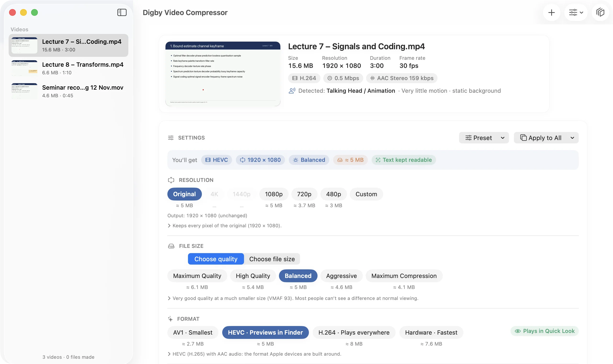
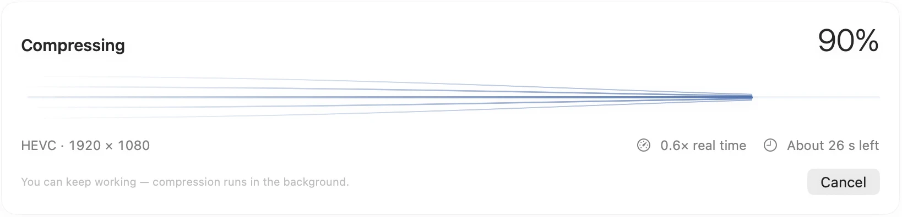
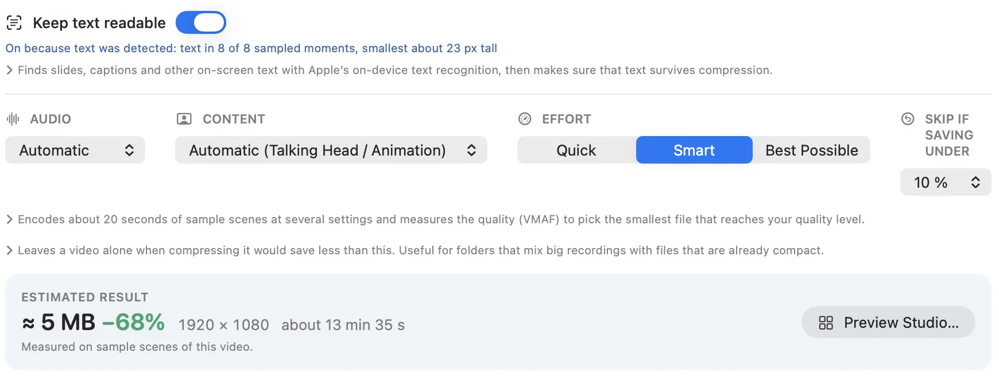
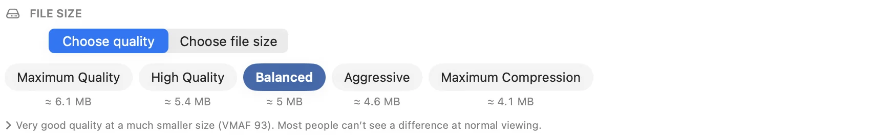
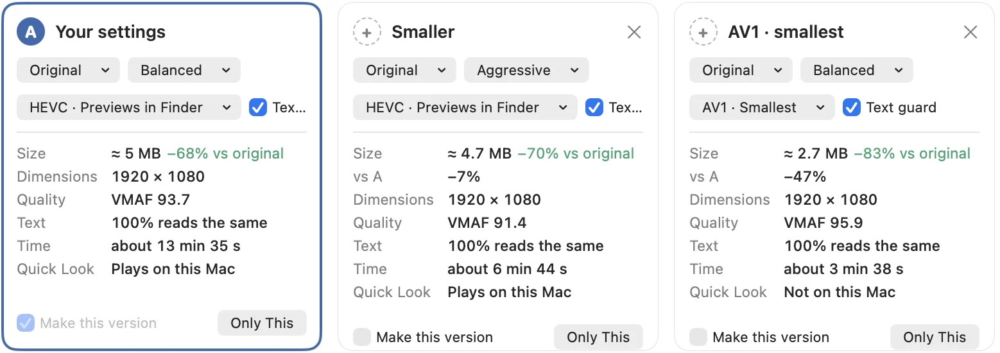
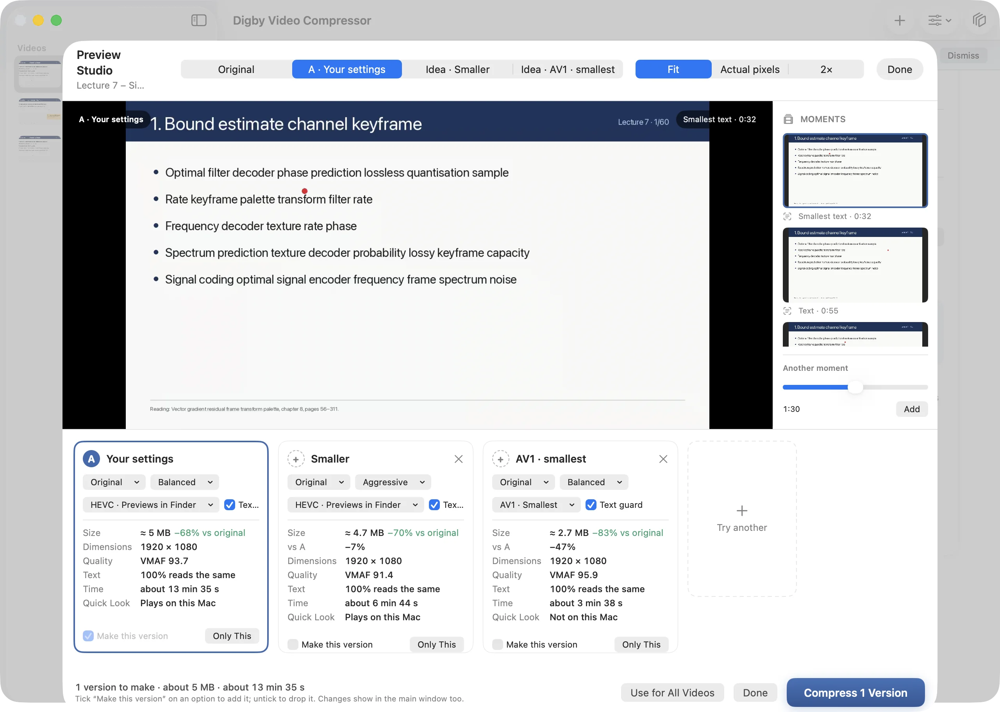
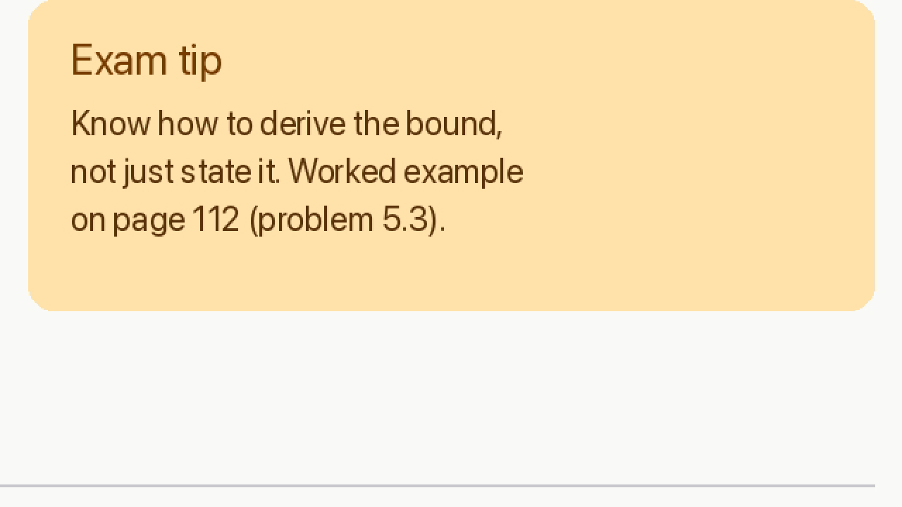

Digby measures your video and finds the smallest file that still looks like the original, with any text in it, from slides to subtitles, still sharp enough to read.
Version 1.2.0 · Apple Silicon · macOS 26 or later · Nothing leaves your Mac
01Measured, not promised
Every number here was measured on a Mac, on real footage.
Digby doesn’t guess. It test-encodes your own video, scores the result with Netflix’s VMAF quality model, and reads the on-screen text back with Apple’s text recognition before it commits.
A 1-hour lecture recording
311 MB→80 MB
A typical screen recording of a one-hour slide lecture, 4× smaller. Every slide still reads perfectly, footnotes included.
HEVC · plays in Finder’s preview
Text in camera footage
88%→98%
How much of the on-screen text stays readable after compressing. “Keep text readable” adds detail only where there are words, so the file stays small.
WithoutWith
Checked by reading the text back
Animation and screen recordings
5×smaller
Than H.264, the format most video uses, at the same picture quality. That’s AV1, the format behind YouTube and Netflix streams.
Most compressors apply one fixed setting to every video. A static lecture and a crowd scene need wildly different amounts of data, so Digby finds the right setting for each one.


01
Look
Measures motion, detail, grain and noise, and finds slides, captions and other text.
02
Test
Encodes about 20 seconds of representative scenes at several settings.
03
Measure
Scores each one with VMAF and reads the text back, then keeps the smallest that passes.
04
Compress
AV1, HEVC or H.264 with the measured setting, in two passes for size targets.
05
Verify
Checks length, sound, size and text on the finished file. Your original is never touched.
03What it does
Simple on the surface. Careful underneath.
Keeps text readable
Finds the slides, captions and code in your video, then raises quality only until that text reads the same as in the original. It never shrinks the resolution past the point where the smallest text survives.
Text in camera footage: 88 % → 98 % readable.

Hits an exact file size
Ask for “under 25 MB” and that’s what you get. Digby subtracts the audio first, encodes in two passes, checks the file, and re-encodes if it came out even slightly over.
If a lower resolution would look better at your size, it measures that too.

Preview Studio
Compare up to four options on your own video’s frames before you commit: exact sizes, dimensions, quality, text legibility and time, flipping between them at actual pixels.
The moments with the smallest text and the most motion are picked for you.

Whole folders, done right
Drop a folder of folders and every video is found. Compressed copies go next to the originals, or replace them: the original goes to the Trash only after its copy is verified, keeping its name and dates.
Other files are never touched. Earlier outputs are skipped automatically.
Previews in Finder
Files play with the space bar, in QuickTime and in Photos on your Mac. Digby knows which Macs can decode AV1 and uses HEVC where they can’t, or AV1 for the smallest files when you prefer.
Every result says whether it plays in Quick Look on this Mac.
Private by design
Everything happens on your Mac. Nothing is uploaded, there’s no account, and no analytics. The encoders (FFmpeg with SVT-AV1, x265, x264 and Opus) are built into the app.
Batches survive quitting and keep your Mac awake until they’re done.
04Preview Studio
See it before you squeeze it.
Real frames, exact settings. Each option encodes your chosen moments with exactly the settings the final file would use.
Numbers before minutes. Size, dimensions, VMAF, text legibility and encode time for every option.
Flip, don’t squint. Arrow keys switch between the original and each option at actual pixels.

Preview StudioThe slide from 01 · actual pixels

OriginalA · Your settingsB · Smaller
AYour settings
Size
≈ 246 KB
Format
AV1 · 1080p
Quality
VMAF 95.4
Text
100 % same
BHEVC
Size
≈ 715 KB
Format
HEVC · 1080p
Quality
VMAF 94.4
Quick Look
Plays
C720p
Size
smaller
Format
AV1 · 720p
Smallest text
13 px
Advice
Keep 1080p
05Formats, plainly
The right format for where it’s going.
Digby explains every choice in plain English, with the trade-offs measured on real footage. These are the four you choose between.
Format
Best for
File size, camera footage
File size, animation & slides
Finder preview on M1/M2
AV1Smallest file
Uploads, archives, the webBrowsers, VLC, IINA, YouTube, M3+ Macs
Smallest
Smallest
No
HEVCApple devices
Watching on Apple devicesEvery modern Mac, iPhone, iPad, Apple TV
7 % bigger
2.2× bigger
Yes
H.264Plays everywhere
Sending to anyoneOld PCs, TVs, any editor
28 % bigger
4.6× bigger
Yes
Hardware HEVCFastest
When time matters mostApple Silicon media engine, 4–18× faster
79 % bigger
4.3× bigger
Yes
Sizes compared with AV1 for the same picture quality. Median bitrate at equal VMAF (85–95) over 8 test clips, measured with SVT-AV1 4.3, x265 4.3, x264 and VideoToolbox on an M1 Max. Methodology and raw results are in the source repository.
Free for macOS
Make room. Keep the picture.
One download. Everything it needs is inside: no Homebrew, no command line, no account.
Apple Silicon (M1 or later)macOS 26 or later22 MB download
01 · OPENOpen the downloaded file and drag Digby Video Compressor to Applications.
02 · FIRST LAUNCHmacOS asks you to confirm the first time, because the app isn’t notarised by Apple yet. The questions below explain why.
03 · COMPRESSDrop in a video and click Compress. From then on it opens like any other app.
06Questions
Good to know.
Is it really free?
Yes. There’s no trial, account or subscription. The source code is public.
Does it upload my videos?
No. Analysis, compression and quality measurement all run on your Mac. Digby doesn’t connect to the internet.
Why does macOS warn me the first time I open it?
Apple only pre-approves apps from developers in its paid programme. Digby is signed but not notarised, so the first launch needs right-click → Open. After that it opens normally.
Will my original be changed?
Not unless you choose “Replace originals”. Even then, the original only goes to the Trash after the compressed copy is finished and verified to play, be the same length, have its sound, and be smaller. You can restore it from the Trash.
Why HEVC and not AV1 on my Mac?
M1 and M2 Macs can’t decode AV1 in Finder’s preview, QuickTime or Photos. Digby uses HEVC there so your files just play. Choose “AV1 · Smallest” under Format to get AV1, which is smaller.
What is VMAF?
A model of how people judge video quality, developed by Netflix with university researchers. Digby uses it to aim for a quality level (93 for Balanced, 97 for Maximum) and to measure every finished file. It under-rates text sharpness, which is why text is checked separately.
Does it work on Intel Macs or older macOS?
Not yet. This version needs Apple Silicon and macOS 26 or later.